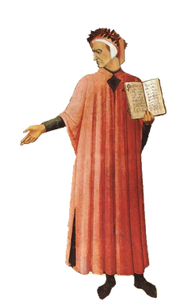

The Master

Dante Alighieri, probably baptized Durante di Alighiero degli Alighieri and often referred to simply as Dante, was an Italian poet. His Divine Comedy, originally called Comedia (modern Italian: Commedia) and later christened Divina by Giovanni Boccaccio, is widely considered the most important poem of the Middle Ages and the greatest literary work in the Italian language.
Dante was instrumental in establishing the literature of Italy, and his depictions of Hell, Purgatory and Heaven provided inspiration for the larger body of Western art. He is cited as an influence on Geoffrey Chaucer, John Milton and Alfred Tennyson, among many others. In addition, the first use of the interlocking three-line rhyme scheme, or the terza rima, is attributed to him. He is described as the "father" of the Italian language, and in Italy he is often referred to as il Sommo Poeta ("the Supreme Poet"). Dante, Petrarch, and Boccaccio are also called the tre corone ("three crowns") of Italian literature.
His Work: The Divine Comedy
The Divine Comedy, Italian La divina commedia, original name La commedia, long narrative poem written in Italian circa 1308-21 by Dante. It is usually held to be one of the world's great works of literature. Divided into three major sections: Inferno, Purgatorio, and Paradiso, the narrative traces the journey of Dante from darkness and error to the revelation of the divine light, culminating in the Beatific Vision of God.
Dante is guided by the Roman poet Virgil, who represents the epitome of human knowledge, from the dark wood through the descending circles of the pit of Hell (Inferno). Passing Lucifer at the pit's bottom, at the dead centre of the world, Dante and Virgil emerge on the beach of the island mountain of Purgatory. At the summit of Purgatory, where repentant sinners are purged of their sins, Virgil departs, having led Dante as far as human knowledge is able, to the threshold of Paradise. There Dante is met by Beatrice, embodying the knowledge of divine mysteries bestowed by Grace, who leads him through the successive ascending levels of heaven to the Empyrean, where he is allowed to glimpse, for a moment, the glory of God.
Gustave Doré's Illustrations

Inferno - Canto I

Inferno - Canto III

Paradiso - Canto XXXI

Paradiso - Canto XIV

Purgatorio - Canto XXV